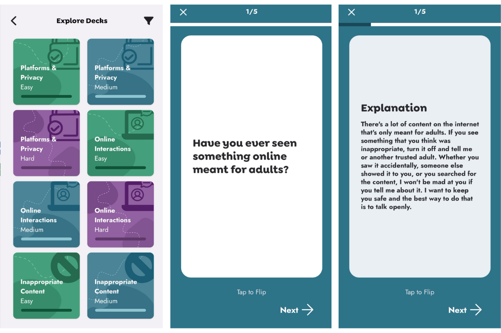

Lillian Wang
Hola! Soy Lillian, una estudiante de Informática y Lingüística en la Universidad de Cornell. Me interesan muchas cosas, pero actualmente estoy aprendiendo el árabe y desarrollando un juego sobre vampiros.
Educación
Cornell University,
Ithaca, NY
B.A. Informática, Lingüística
Cursos Relevantes:
Object-Oriented Programming, Data Structures, Database Systems, Computer
System Organization, Machine Learning, Natural Language Processing
Actividades:
Hack4Impact, Language Expansion Program, Language House
Habilidades
Lenguajes:
Python, Java, OCaml, HTML/CSS, JavaScript, SQL, R, Swift
Bibliotecas:
React, Flask, NumPy, Pandas, Matplotlib, Seaborn, Scikit-Learn, PyTorch
Herramientos:
Git, Postman, Docker, DBMS, AWS
Proyectos

- Creé una app del estilo Quizlet en React Native centrada en educación para la prevención del abuso infantil
- Implementé una API para obtener cartas, digitalicé mazos educativos sobre el abuso infantil y diseñé navegación intuitiva para mejorar la experiencia del usuario utilizando Typescript y Tailwind CSS

- Desarrollé Scrabble desde cero en OCaml, contando con mecánica de turnos, validación de palabras, puntuación con multiplicadores, y manejo robusto de errores para casos límites y entradas inválidas
- Diseñé una interfaz gráfica responsiva a través de la biblioteca de OCaml Graphics
Investigación
Charles Research Group
— Asistente de investigación
- Utilicé R para analisar datasets históricos y espaciales complejos relacionados al Acto Morrill de 1862
- Desarrollé visualizaciones geoespaciales interactivas para evaluar impactos regionales y creé una aplicación web accesible para la exploración de datos a través de Leaflet y Shiny
Cornell Lab of Ornithology
— Práctica de investigación
- Creé redes estadísticos basados en Python para datos bioacústicos con visualizaciones en Matplotlib
- Desarrollé un nuevo método para agregar azimuths utilizando de clustering con Scikit-Learn , mejorando la fiabilidad de la estimacion de abundancia al reducir el ruido y la incertidumbre direccional en grabaciones tetraédricas